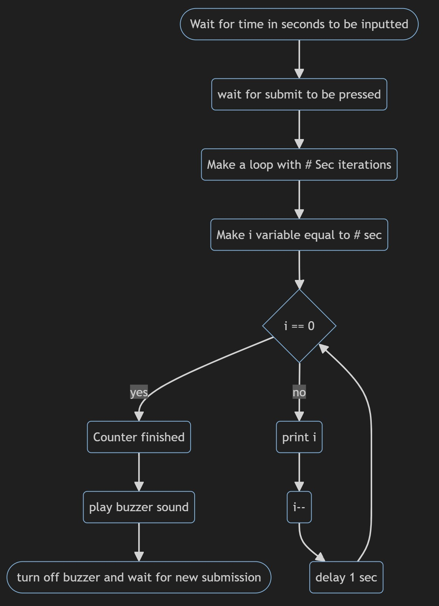

This is the final project for my csc102 Class for summer of 2024
You should have at least 3 items from this list - decision logic (if/else), loops, string manipulation,
validation, classes, and objects
The number of seconds left:
Press Submit to Begin Counter
